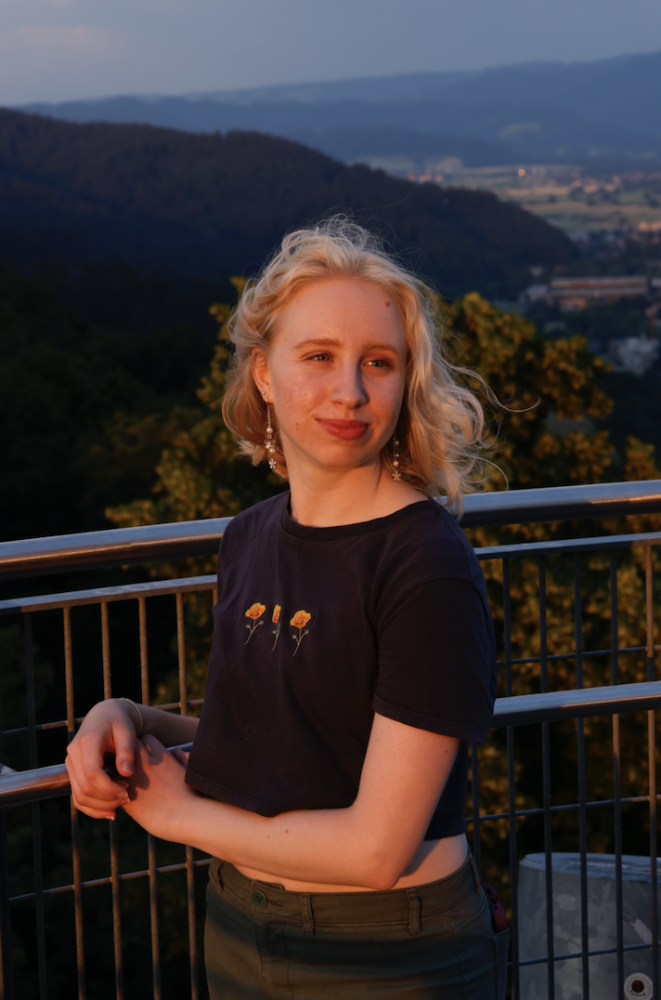

Who am I?
Hi! I’m Hannah, a multi-passionate human who enjoys finding the glimmers in life. My greatest passion is dance, as it holds the key to forming deep connections and brings people together. I aspire to bring this ephemeral quality to HCI (Human Computer Interaction) and Interaction Design. As a mathematician and computer scientists by trade, I explore the space between interactive technology, disability justice, environmental awareness, and dance.

Updates
- December 2024: Running my own workshop with the support of NAVET on the ethics of technology recording our bodies, called NOT YOUR BODY, just my shadow
- November 2024: Made a wooden stool from recycled materials
- October 2024: Participating in a workshop series on Disability Theory in HCI led by Rua Williams
- August 2024: Concluded my time at Holden Village and starting a master’s in Interactive Media Technology at KTH!
- January 2024: Returned to Holden Village to work on website and graphic design as a Creative Technician
- October 2023: Volunteered in a remote village in the Cascade mountains of Washington as a Kitchen Assistant
- September 2023: Completed Soliya Global Circles Program
- June 2023: Interrail from Czech Republic to France. Visited Prague, Brno, Bratislava, Bled, Trieste, Venice, Munich, Frieburg, and Paris
- May 2023: Graduated from Ohio State with BS in Computer Science and BS in Theoretical Mathematics